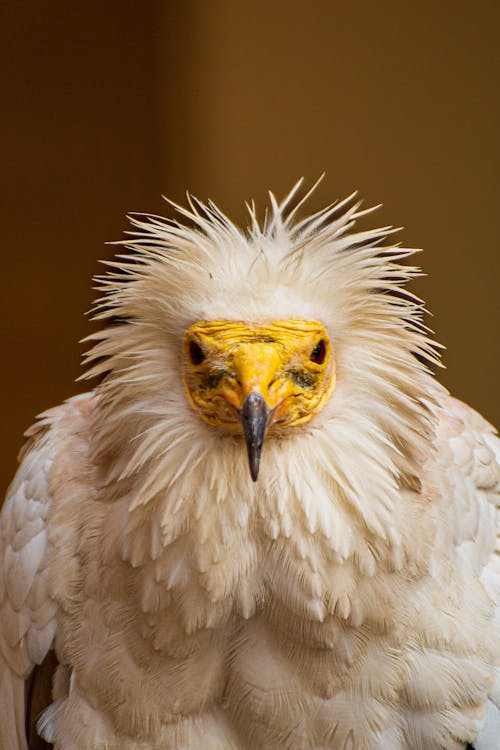

Mısır akbabası (Neophron percnopterus), küçük boyutuna rağmen zekâsı ve uyum yeteneğiyle dikkat çeken bir akbaba türüdür. Akdeniz havzasından Afrika’ya ve Güney Asya’ya kadar geniş bir coğrafyada görülen bu kuş, özellikle kayalık alanlarda ve yarı çöl bölgelerinde yaşamını sürdürür. Beslenme alışkanlıklarında diğer akbabalardan ayrılır; leşlerin yanı sıra yumurta kırmak için taş kullanmasıyla bilinir ve bu davranışıyla doğada araç kullanan ender kuş türlerinden biri olarak öne çıkar. Sarı yüzü ve beyaz tüyleriyle kolayca ayırt edilen mısır akbabası, tek eşli yaşam sürer ve yuvalarını genellikle kayalık yarıklara kurar. Ekosistemde temizlikçi rolüyle hastalıkların yayılmasını önleyen bu tür, aynı zamanda birçok kültürde bilgelik ve zekânın sembolü olarak yer bulmuş, doğanın döngüsünde vazgeçilmez bir denge unsuru olmuştur.